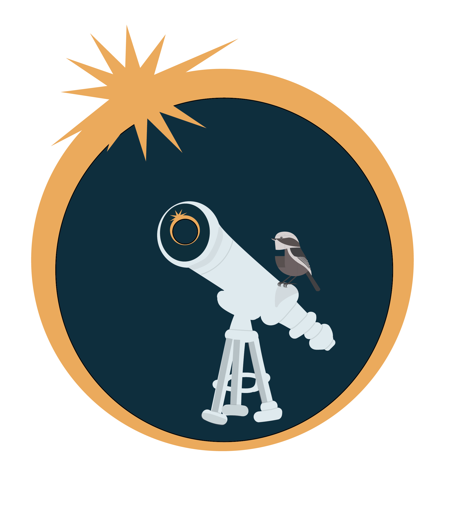
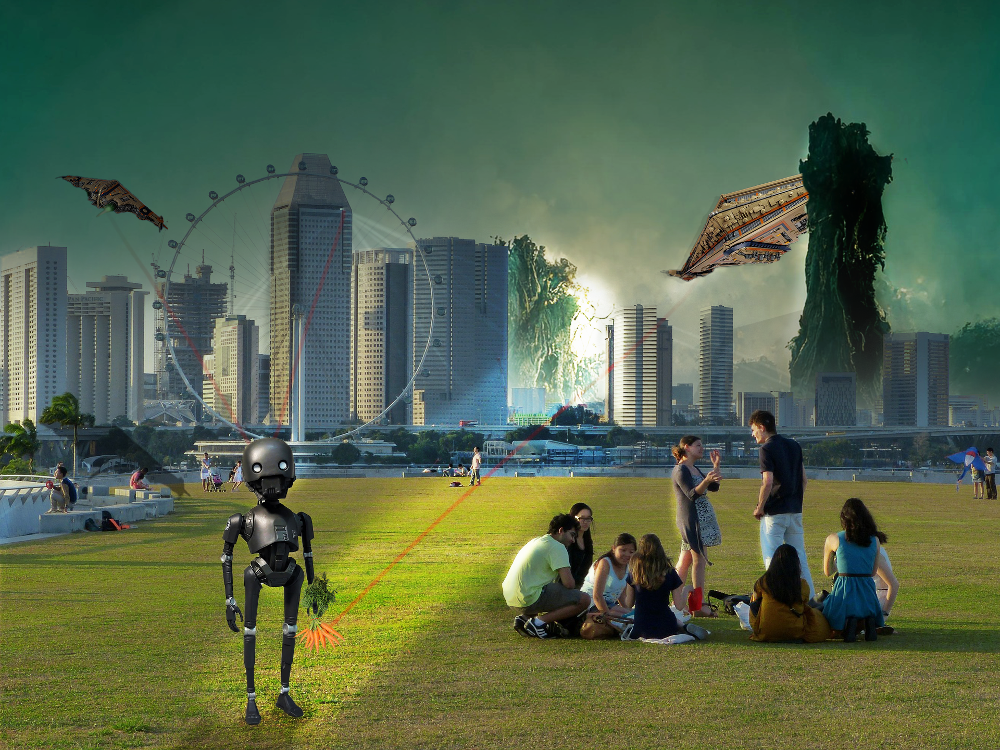
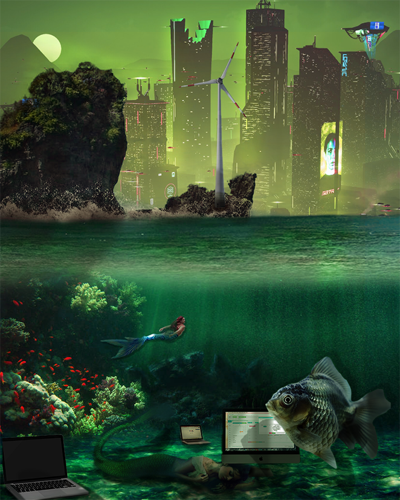

I usually make art in a pretty intuitive way, letting things flow as I go. For this project, I did start with some planning, but as I worked on it, my direction changed a little. However, I kept the main idea and feeling the same, especially with the overall structure of the final logo. My inspiration came from a mix of historical references, the local vibe, and the planetarium itself. I used a color palette that was based on one from an artist’s depiction of Portland, Maine, and I also worked in a subtle reference to the 1970 eclipse, the year the planetarium was built. I liked hiding these little details in the design and am interested in further exploring hidden design elements in the future. Looking at my work from an outsider’s perspective and reflecting on the feedback I got during critique, one suggestion that stood out was to incorporate the lettering into my design. I had picked a font, but I hadn’t added it yet because I wasn’t sure if it would fit. After hearing Taryn’s feedback, I realized I should’ve gone ahead and tested it, even if I was uncertain. Next time, I’ll create multiple versions of my design in separate files so I can really compare and contrast them to find the most visually effective option. I also realized that I relied a lot on the green background to tie everything together in the color palette. While it worked once I added the transparency grid, I should’ve considered the whole piece from the beginning so I wouldn’t have to make adjustments later. That way, I can avoid unnecessary second guessing during the process and create with the intention of the final piece being specific. Overall, I’m pleased with the final outcome. I’m not super experienced with Illustrator so there were definitely moments of frustration, but I was proud of what I accomplished! I liked being able to sneak in subtle design elements, like the historical eclipse reference and the local color palette. It was a great learning experience, and moving forward, I’ll definitely approach things with a bit more confidence and flexibility
 Project One LogoFor my project, I created a dystopian world where AI and tech advancements have overtaken nature, raising questions about sustainability, ethics, and control. In the first scene, computers are consuming fresh water, symbolizing how tech can exploit essential resources such as freshwater. Even the windmill, usually a symbol of clean energy, is being used for something harmful, showing how innovation can be misused. The air is polluted, and mythical creatures represent extreme genetic modifications raising the question: once we start altering life, where do we stop? Where is the line drawn there? In the second scene, a robot accidentally develops human emotions and compassion. He finds carrots, one of the last real agricultural resources and in that moment he becomes a threat. The red lights on his body show that he is now marked as an enemy of the system, which strictly controls everything. The landscape around him looks lush and beautiful, but it’s all artificial, a reminder that nature has been replaced with a convincing illusion. Bright surveillance lights track every figure in the scene, making sure no one steps out of line, even if the rules themselves are unethical. Both scenes depict a future where technology has gone too far, replacing nature with artificial substitutes and controlling people. There are still glimpses of beauty, but they are fleeting, almost like a cruel joke. To bring this concept to life, I carefully planned the compositions. I sourced high quality images of mermaids, cybernetic elements, computers, fish, windmills, backgrounds, robots, people, etc…integrating them with futuristic cityscapes and underwater environments. Photoshop techniques such as layering, masking, and color grading helped merge organic and mechanical aesthetics. I used the paintbrush tool to draw in shadows and light to add depth to the scenes. Viewing my work as an outsider, I see that the composition successfully conveys a thought provoking contrast between nature and technology. During the critique, feedback highlighted the strong conceptual foundation and dynamic use of contrasting environments. However, some comments suggested that the shadows in the underwater scene should align more accurately to create a more cohesive and realistic lighting effect. In the robot composition, the lighting on the robot appeared unnatural, which I plan to adjust by refining the light source and shadow interactions. This project deepened my understanding of the relationship between technology and artistic storytelling. It challenged me to push my compositional skills while maintaining a clear, impactful message. Additionally, I realized how digital art can be a powerful medium for social and environmental commentary. Exploring the balance between realism and surrealism helped me develop a more refined artistic voice, and I plan to continue using these techniques in future projects! I also have a lot more respect for photo editors!
 In my project A Fading Dream, I sought to explore the stark contrast between how politicians address the climate crisis and the tangible beauty of the natural world that is under threat. My creative process began with the selection of political clips, particularly moments when figures like Trump downplayed the urgency of climate change. These segments were meant to represent the disconnection between political rhetoric and the environmental reality we face. I wanted these clips to be jarring, almost unsettling, which is why I chose to fragment their speech, cutting it up and placing it alongside serene shots of nature, such as lush forests, oceans, and wildlife. The imagery was deliberately beautiful but carried a sense of sadness, an undertone of loss. To enhance this, I layered speeches from climate activists, urging action and adding a sense of urgency. The soft, melancholic music underscored the peaceful yet fragile nature of the visuals. The inspiration for this work stemmed from my frustration with the disconnection I observed between political discourse and the urgency of the climate crisis. I wanted to critique how these conversations were detached from the true gravity of the situation. The use of montage was influenced by filmmakers like Jean-Luc Godard, whose work often used contrasting images to deliver a societal critique. By placing fragmented political discourse alongside the tranquil beauty of nature, I hoped to create a poignant commentary on what’s at stake.In terms of feedback, I received valuable suggestions on how to strengthen the piece. One comment that stood out was to integrate the political clips more throughout the video rather than just at the beginning. This suggestion felt like an opportunity to amplify the tension between nature and politics in a more continuous, unsettling way. If I were to revisit this project, I would certainly consider fragmenting the political speech and inserting it more irregularly throughout the piece to keep the sense of unease flowing. The feedback also suggested that I could improve the transition from the political clips to the nature montage by adding a noise or grain filter to make the shift feel less abrupt. This is something I would like to explore further to create a more cohesive visual experience. Reflecting on my work, I realize that there are still areas I could refine, particularly in terms of pacing and the seamless integration of my political commentary with the visual elements. The project made me realize the importance of subtlety and how even in the most serene moments, there can be an undercurrent of tension. If given more time, I would expand the work by adding more political clips and climate voices, creating a broader conversation about the urgency of climate action. In the end, I want the audience to leave with a lingering feeling of unease, a quiet motivation to reflect on what we stand to lose and what needs to change before it’s too late.